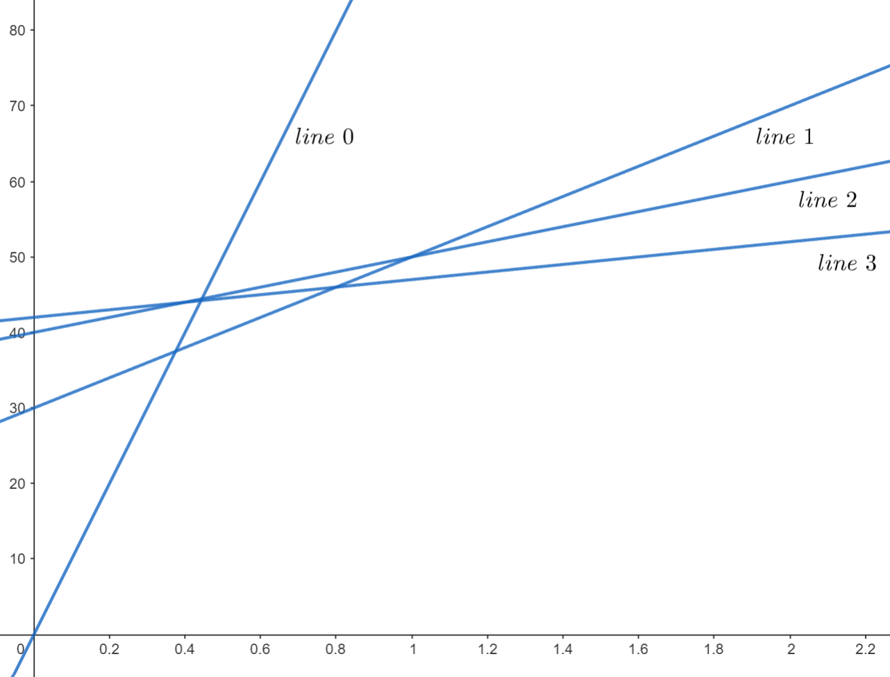
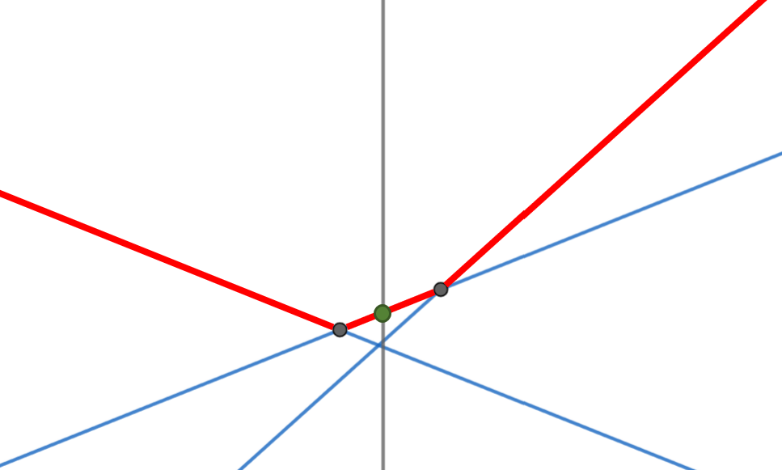

Convex Hull Optimization
Introduction
中文稱作斜率優化或凸包優化，是其中一種常見的 DP 優化。
先考慮以下例題：
有 \(n\) 個關卡，每關有一個怪物，通關時必須從第一關開始依序通關。每關有兩個數字 \(s_i\) 與 \(f_i\)，且 \(s\) 隨 \(i\) 遞增、\(f\) 隨 \(i\) 遞減。你會有一個起始的能力值，對於除了第 \(n\) 關以外的怪物，你可以選擇打或不打，打了就能將能力值更新成 \(f_i\)。而打敗一關的怪物需消耗 \(s_i \times f\) 的 cost，其中 \(f\) 為當前能力值。求打敗第 \(n\) 關怪物的最小 cost。
- \(1\leq n\leq 2\times 10^5\)
考慮 \(O(n^2)\) 的做法，令 \(f(i)\) 為殺掉第 \(i\) 關怪物所需花的最少時間。
轉移式為：\(f(i)=\underset{j<i}{\min}(f(j)+f_j\times s_i)\)
但是這個複雜度無法解決此題。
斜率單調 & 查詢單調
我們觀察一下轉移式：\(f(i)=\underset{j<i}{\min}(f(j)+f_j\times s_i)\)。形式其實類似於 \(y=ax+b\)，其中 \(a\) 與 \(b\) 只和 \(j\) 有關、\(x\) 與 \(y\) 只和 \(i\) 有關。以剛剛的轉移式來說，對應關係如下：
\[y=f(i)\] \[x=s_i\] \[a=f_j\] \[b=f(j)\]
因此對於所有的 \(j\)，我們可以將所有的 \(y=ax+b\) 在座標平面上畫出來。在求 \(f(i)\) 時，我們的題目便轉變成：給定一個 \(x\)，也就是給定 \(s_i\)，求他帶入一個直線集合中，哪一條能有最小的 \(y\)，也就是哪個 \(j\) 能有最小的 \(f(j) + f_j \times s_i\)
接下來便要思考如何找最小值。如果要代入每一條直線再取極值才能找到答案，並不會優化複雜度，但我們可以來觀察一下這個線集，應該會長類似這個樣子：

可以發現這是一個斜率不斷遞減的線集（從算式中也能看出，作為斜率的 \(f_j\) 是遞減的）。對於每個 \(x\)，我們都能在這個線集中找到對應的最小值，如果我們將它們通通標出來，可以發現會形成一個上凸包：

為了說明方便先將不再凸包的線拿掉，事實上每次插入一條線我們都能判斷哪些線將不在凸包上，後面會講解：

對任何 \(x'\) 而言，\(x=x'\) 與這個上凸包的交點便是所求的最小值。要找到這個交點，我們必須維護這個凸包，並支援兩種操作：
-
查詢：對於 \(x=s_i\)，我們要能找出其與凸包的交點。
由於查詢具單調性，以此題而言，查詢遞增且我們要找最小值，最小值所在的直線的斜率一定會越來越小。因此我們可以只考慮目前斜率最大的直線，並確認目前直線與 \(x=s_i\) 的交點是否真的是最小值。確認的方法便是比較當前交點以及下一條直線（斜率第二大的直線）與 \(x=s_i\) 的交點，若下一條直線能讓我們得到更好的答案，我們就要把當前斜率最大的直線丟掉。反之，斜率最大的直線與 \(x=s_i\) 的交點就是我們要找的最小值。
比較兩條直線提供的答案：

下一條直線提供的答案更小，因此我們刪除斜率最大的直線：

-
插入：插入一條新的線
插入似乎相對直觀，只是畫一條新的線在凸包上。由於斜率單調，插入直線時我們只要將直線插入凸包最右（左）邊就好。但我們考慮下列情況：
原本的線集：

加入新的直線：
在我們加入新的直線後，有一些直線便不在凸包上了，意即它們不可能成為任何查詢的答案。這時我們要將它們移出凸包，否則會取到錯誤的答案。
因此，在每次加入新的直線之前，我們要檢查是否有直線在這次加入後，再也不會被當成答案。檢查的方式是看凸包中倒數第二條線（根據加入順序）與當前要插入的直線的交點，以及凸包中倒數第二條線與最後一條線的交點。若前者有更小的 \(x\) 座標，則最後一條線不在凸包上，要拿掉。
舉例來說，下圖中 \(line1\) 為凸包中的倒數第二條線；\(line2\) 為凸包中最後一條線；\(line3\) 為新加入的直線。在這裡，\(line1\) 與 \(line3\) 的交點有更小的 \(x\) 座標，因此 \(line2\) 要被刪掉：

假設：
\(line1: y=a_1 x+b_1\)
\(line2: y=a_2 x+b_2\)
\(line3: y=a_3 x+b_3\)
則 \(line1\) 與 \(line3\) 交點的 \(x\) 座標為：\(\frac{b_3-b_1}{a_1-a_3}\)
\(line1\) 與 \(line2\) 交點的 \(x\) 座標為：\(\frac{b_2-b_1}{a_1-a_2}\)
因此，\(line2\) 要被刪除的條件為：\(\frac{b_3-b_1}{a_1-a_3} \le \frac{b_2-b_1}{a_1-a_2}\)
為了避免浮點數誤差，我們將分母做移項，得到 \(line2\) 要被刪除的條件為：
\((b_3-b_1)(a_1-a_2) \le (b_2-b_1)(a_1-a_3)\)
綜合上述，我們可以使用單調隊列，開一個 deque 完成這兩項操作。具體而言，每算完一個 \(f(i)\)，便將 pair \((f_i, f(i))\) 插入隊列尾端，分別代表直線的 \(a\) 與 \(b\)。插入之前，我們檢查是否有直線在這次插入後，再也不會被當成答案，有的話就從後端 pop 掉。
在查詢最小值時，我們不斷比較隊列中第一個與第二個直線，如果將當前的 \(x\) 代入兩條直線後，發現代入第二條直線有更好的解，則將第一條直線 pop 掉。
這麼一來複雜度便降到 \(O(n)\)。
Solution Code
#include <bits/stdc++.h>
using namespace std;
using ll = long long;
using pll = pair<ll, ll>;
const ll N = 200005;
int s[N], f[N];
ll dp[N];
ll cal(ll x, pll line){
return x * line.first + line.second;
}
bool cmp(pll line1, pll line2, pll line3){
ll a = line3.second - line1.second;
ll b = line2.second - line1.second;
ll c = line1.first - line3.first;
ll d = line1.first - line2.first;
return a * d <= b * c;
}
int main(){
int n;
cin >> n >> f[0];
for(int i = 1; i <= n; i++){
cin >> s[i];
}
for(int i = 1; i <= n; i++){
cin >> f[i];
}
deque <pll> dq;
dq.emplace_back(f[0], 0);
for(int i = 1; i <= n; i++){
while(dq.size() >= 2 && cal(s[i], dq[0]) > cal(s[i], dq[1])){
dq.pop_front();
}
dp[i] = cal(s[i], dq[0]);
pll line(f[i], dp[i]);
int sz = dq.size();
while(sz >= 2 && cmp(dq[sz - 2], dq[sz - 1], line)){
dq.pop_back();
sz--;
}
dq.emplace_back(line);
}
cout << dp[n] << "\n";
return 0;
}
我們來看一個稍微複雜的例題。
給定一個長度為 \(n\) 的陣列與一個整數 \(k\)，你可以將陣列切成數段連續的區間，區間大小不能超過 \(k\)，求切完之後的最大價值。> 一段長度為 \(x\)、為整個陣列由左至右數來第 \(m\) 個區間，其價值被定義為 \((m-1)\times \sum\limits^r_{i=l}a_i-x^2\)。其中 \(l\)、\(r\) 分別為區間左右界、\(a_i\) 為陣列中第 \(i\) 個值。
- \(1 \leq k \leq n \leq 500000\)
一樣，我們先試著列出轉移式。令 \(f(i)\) 為前 \(i\) 個數字貢獻的價值（同時第 \(i\) 個元素為區間右界）。
轉移式為：\(f(i)=\underset{j<i}{\max}(f(j)-(i-j)^2+suf(i+1))\)
其中 \(suf(i+1)\) 是後綴和，範圍從 \(i+1\) 到 \(n\)。
除了 \(suf(i+1)\) 這一項外，其他部分還蠻直觀的。而 \(suf(i+1)\) 這一項對應到題目的 \((m-1)\times \sum\limits^r_{i=l}a_i\)，我們看一張示意圖以更好理解 \(suf(i+1)\) 的意義：

上面的示意圖對每個區間畫出了其 \((m-1)\times \sum\limits^r_{i=l}a_i\) 的值。我們可以將它們重新分割變成下面這樣：

可以發現這每一塊其實就是一段後綴，而且每個後綴的起點對應到每個區間的起點（除了第一個區間不考慮）。我們轉移式中的 \(i\) 是區間終點，因此 \(i+1\) 便對應到區間起點。而所有的 \(suf(i+1)\) 加起來，就對應到所有區間的 \((m-1)\times \sum\limits^r_{i=l}a_i\)，這個部分的總和。
瞭解轉移式的推導後，我們回來觀察這個轉移式。它看起來與 \(y=ax+b\) 的形式不太像，但我們試著將它展開：
\(f(i)=\underset{i>j>i-k}{\max}(f(j)-(i-j)^2+suf(i+1))\)
\(=\underset{i>j>i-k}{\max}(f(j)-i^2+2ij-j^2+suf(i+1))\)
\(=\underset{i>j>i-k}{\max}(f(j)-j^2+2ij)-i^2+suf(i+1)\)
可以發現 \(max\) 裡面的部分變成 \(y=ax+b\) 的形式了：\[y=f(i)\] \[x=2i\] \[a=j\] \[b=f(j)-j^2\]
這麼一來就可以使用剛剛提到的技巧了！但仔細觀察一下，這個轉移式與上一個例題有兩個不同的地方：
-
上一題是取 \(min\)、這一題是取 \(max\)，同時斜率從遞減變為遞增。
其實概念是差不多的，我們一樣把線畫出來觀察一下：

標記凸包：

可以發現我們只是從在上凸包中尋找答案，改為在下凸包中尋找答案而已。實作上來說，我們只要在比較哪個答案比較好時，改成越大的答案越好就好。也就是下面這份 code 的第二行，後面比較時要使用小於（這邊的 \(x\)、\(a\)、\(b\)，意義同 \(y=ax+b\) 中的 \(x\)、\(a\)、\(b\)）。
for(ll i = 1; i <= n; i++){ while(dq.size() >= 2 && cal(x[i], dq[0]) < cal(x[i], dq[1])){ dq.pop_front(); } dp[i] = cal(x[i], dq[0]); pll line(a[i], b[i]); int sz = dq.size(); while(sz >= 2 && cmp(dq[sz - 2], dq[sz - 1], line)){ dq.pop_back(); sz--; } dq.emplace_back(line); } -
轉移範圍有限制，只能從往前 \(k-1\) 個轉移點來轉移。
看起來也不是什麼大問題，好像只需要在 pop
deque前端的直線時，將過期的線也 pop 掉就好。這邊假設
deque裡面的每個元素由 \(a\)、\(b\)、\(idx\) 組成，\(a\)、\(b\) 代表直線的資訊，\(idx\) 代表轉移點的 index。for(ll i = 1; i <= n; i++){ while(dq.size() >= 1 && dq[0].idx < i - k){ dq.pop_front(); } while(dq.size() >= 2 && cal(x[i], dq[0]) < cal(x[i], dq[1])){ dq.pop_front(); } dp[i] = cal(x[i], dq[0]); pll line(a[i], b[i]); int sz = dq.size(); while(sz >= 2 && cmp(dq[sz - 2], dq[sz - 1], line)){ dq.pop_back(); sz--; } dq.emplace_back(line); }但這樣真的解決了嗎？我們考慮一下下面這種情況：

我們現在要求最大值、且斜率遞增。假設現在我們要插入一條新直線（紅色）：

依照前一個例題的概念，藍色線上的所有點都不在凸包上，我們應該要移除它。這邊將它變虛線表示移除。

接下來我們要進行下一個查詢：

假設這時最左邊的線過期了，於是我們將它移除：

這時我們發現其實剛剛被我們移除掉的藍色線才能提供最好答案，但我們已經將它移除了。從這個例子我們發現，在加了直線會過期的限制後，我們除了要在直線過期時移除它之外，我們也要更改一下移除不在凸包上直線的策略。
注意到在綠色線被移除之前，藍色線都不可能提供答案。因此我們要多判斷的是藍色線在綠色線被移除之後，會不會成為可能的轉移來源。具體而言，在我們放入紅色線前，要決定藍色線是否要被移除，而方法是多判斷在綠色線被 pop 時的那一個查詢，藍色線會不會提供比紅色線更好的答案。
直接來看 code 比較好理解，這邊以這題的情況，假設線過期的條件是 \(j < i-k\) 則過期。
for(ll i = 1; i <= n; i++){ while(dq.size() >= 1 && dq[0].idx < i - k){ dq.pop_front(); } while(dq.size() >= 2 && cal(x[i], dq[0]) < cal(x[i], dq[1])){ dq.pop_front(); } dp[i] = cal(x[i], dq[0]); pll line(a[i], b[i]); int sz = dq.size(); while(sz >= 2 && cmp(dq[sz - 2], dq[sz - 1], line) && cal(x[dq[sz - 2].idx], dq[sz - 1]) <= cal(x[dq[sz - 2].idx], line)){ dq.pop_back(); sz--; } dq.emplace_back(line); }在加線之前判斷是否要 pop 掉
deque最後方的線那一部分，我們多加了一個條件判斷deque最後方的線是否有可能在它前方的線被 pop 掉後提供答案。由此我們可以保證每一條在deque裡面的線都是可能的轉移來源。
其他部分便與上一個例題概念相同，上述做法複雜度一樣為 \(O(n)\)。
Solution Code
#include <bits/stdc++.h>
#pragma GCC optimize("O2")
using namespace std;
using ll = long long;
using pll = pair<ll, ll>;
const ll N = 500005;
ll a[N], suf[N], dp[N];
ll cal(ll x, pll line){
return x * line.first + line.second;
}
bool cmp(pll line1, pll line2, pll line3){
ll a = line3.second - line1.second;
ll b = line2.second - line1.second;
ll c = line1.first - line3.first;
ll d = line1.first - line2.first;
return a * d <= b * c;
}
int main(){
ios_base::sync_with_stdio(0); cin.tie(0);
ll n, k;
cin >> n >> k;
for(int i = 1; i <= n; i++){
cin >> a[i];
}
for(int i = n; i >= 1; i--){
suf[i] = a[i] + suf[i + 1];
}
deque <pll> dq;
dq.emplace_back(0, 0);
for(ll i = 1; i <= n; i++){
while (dq.size() > 0 && dq[0].first < i-k){
dq.pop_front();
}
while(dq.size() >= 2 && cal(2 * i, dq[0]) <= cal(2 * i, dq[1])){
dq.pop_front();
}
dp[i] = cal(2 * i, dq[0]) - i * i + suf[i + 1];
pll line(i, dp[i] - i * i);
int sz = dq.size();
while(sz >= 2
&& cal(2 * (dq[sz - 2].first + k), dq.back()) <= cal(2 * (dq[sz - 2].first + k), line)
&& cmp(dq[sz - 2], dq.back(), line)
){
sz--;
dq.pop_back();
}
dq.emplace_back(line);
}
cout << dp[n] << "\n";
return 0;
}
小結
以上就是斜率優化的例題與概念，我們再複習一下大致的步驟：
-
將初始值放入
deque -
根據填表順序計算 \(f(i)\)：
i. 不斷比較
deque最前端的兩條線。若第二條線有較好的答案就 pop 掉最前端的線，不斷重複直到最前端的線有最好的答案，或是deque中只剩一條線。ii. 利用
deque最前端的線計算 \(f(i)\)。iii. 不斷比較
deque最尾端的線與新的直線。若前者在新的線加入後便不在凸包中就 pop 掉，最後插入新的直線。
雖然步驟都大同小異，但不同題目還是有一些差異，在實作前要特別注意：
- 要注意斜率以及查詢的單調性是遞增或遞減，會影響實作（比較線段時要用大於還是小於等等）。
- 注意題目是否會有轉移範圍的限制。如果有的話，在計算 dp 值之前，過期的線段也要 pop 掉，同時拔掉不在凸包上的點的條件也要做更改。
- 轉移式取 max 與取 min 的差別在於建下凸包或是建上凸包，方法是差不多的。
斜率單調 & 查詢不單調
上面的題目由於查詢單調，我們才能保證可以只看 deque 前端的線段就找到最小值。那麼，要是查詢不單調該怎麼辦？
我們來看另一個例題：
有 \(n\) 個任務，第 \(i\) 個任務單獨完成所需的時間為 \(T_i\)、費用為 \(C_i\)。現在我們可以將任務分批，每批包含相鄰的若干個任務。任務被依序執行，完成一批任務所需的時間是各個任務需要時間的總和，同一批任務會在同一時刻完成。另外，在每批任務開始前，機器需要啟動時間 \(s\)。一個任務的 cost 被定義為它的完成時刻乘以它的費用。起始時間為 \(0\)，求最小的 total cost。
- \(1 \leq n \leq 300000\)
- \(-2^8 \leq T_i \leq 2^8\)
- \(0 \leq C_i \leq 2^8\)
先列轉移式。令 \(f(i)\) 為完成前 \(i\) 個任務的最小 cost。
轉移式為：\(f(i)=\underset{j<i}{\min}(\sum\limits_{k=1}^i T_k \times \sum\limits_{k=j+1}^i C_k+s \times \sum\limits_{k=j+1}^n C_k+f(j))\)
其中，\(s \times \sum\limits_{k=j+1}^n C_k\) 這一項是為了計算 \(s\) 所影響的任務完成時刻。由於影響的時間與總共切幾個區間有關，這裡用類似前面例題 TIOJ 1676 - 烏龜疊疊樂，使用後綴和的想法，在每多切一個區間出來時就加上後綴因此而產生的 cost。
接下來，我們將轉移式展開：
\(f(i)=\underset{j<i}{\min}(\sum\limits_{k=1}^i T_k \times \sum\limits_{k=j+1}^i C_k+s \times \sum\limits_{k=j+1}^n C_k+f(j))\) \(=\underset{j<i}{\min}(pre_t(i) \times (pre_c(i)-pre_c(j))+s \times (pre_c(n)-pre_c(j))+f(j))\) \(=\underset{j<i}{\min}(-pre_t(i) \times pre_c(j)-s \times pre_c(j)+f(j))+pre_c(i) \times pre_t(i)+s \times pre_c(n)\)
其中 \(pre_t(i)\) 為 \(T\) 的前綴和，即 \(\sum\limits_{k=1}^i T_k\)；\(pre_c(i)\) 為 \(C\) 的前綴和，即 \(\sum\limits_{k=1}^i C_k\)。
我們可以得到：\[y=f(i)\] \[x=-pre_t(i)\] \[a=pre_c(j)\] \[b=f(j)-s \times pre_c(j)\]
\(pre_c(j)\) 是遞增的，沒什麼問題。但 \(pre_t(i)\) 就不是了。由於 \(T_i\) 有可能小於 \(0\)，\(T\) 的前綴和不具單調性。也就是說，我們的查詢不再單調了。
查詢不再單調，意味著轉移來源不單調，因此我們查詢的時候不能再取最左（右）邊的線來做比較。但是，斜率依然是單調的，因此我們可以改為使用二分搜來尋找答案。我們一樣維護一個斜率有單調性的序列，不過這次我們不再取最前端的直線來計算答案，而是改為使用二分搜。這時我們不再需要 pop 最前段的線，但是在 insert 新的直線到序列最尾端時，我們一樣要將不可能是答案的直線 pop 掉。
至於二分搜要搜什麼呢？注意到我們維護的是一個凸包，凸包上的點的 \(x\) 座標是單調的。而每當我們要查詢的時候，我們想找的那條線上的兩個頂點（下圖的灰色點）會在當前查詢的 \(x\) 座標（下圖的灰色線）的左右兩側：
因此我們在二分搜時，可以比較當前線段與下一條線段交點的 \(x\) 座標，以及當前要查詢的 \(x\) 座標，若前者較大則右界改為當前 \(mid\)、反之更改左界。
將查詢改為二分搜會讓複雜度多一個 \(\log\)，總複雜度是 \(O(n\log n)\)。
Solution Code
此題時間較緊，需要壓一下常數，因此這邊使用陣列來實作。一般情況下，deque 常數較大，且因為我們不需要 pop_front，可以使用 vector 來實作。
#include <bits/stdc++.h>
using namespace std;
using ll = long long;
using pll = pair<ll, ll>;
const ll N = 300005;
ll pret[N], prec[N];
ll dp[N];
pll v[N];
ll sz;
inline ll cal(ll x, pll line){
return x * line.first + line.second;
}
inline bool cmp2(pll p1, pll p2, ll x){
return (p2.second - p1.second) > (p1.first - p2.first) * x;
}
inline pll find_line(ll x){
int l = 0, r = sz - 2, mid, ans = r + 1;
while(l <= r){
mid = (l + r) >> 1;
if(cmp2(v[mid], v[mid + 1], x)){
r = mid - 1;
ans = mid;
}
else l = mid + 1;
}
return v[ans];
}
inline bool cmp(pll line1, pll line2, pll line3){
__int128 a = line3.second - line1.second;
__int128 b = line2.second - line1.second;
__int128 c = line1.first - line3.first;
__int128 d = line1.first - line2.first;
return a * d <= b * c;
}
int main(){
ios_base::sync_with_stdio(0); cin.tie(0);
ll n, s;
cin >> n >> s;
for(int i = 1; i <= n; i++){
cin >> pret[i] >> prec[i];
pret[i] += pret[i - 1];
prec[i] += prec[i - 1];
}
v[sz++] = pll(0, 0);
for(int i = 1; i <= n; i++){
pll fl = find_line(pret[i]);
dp[i] = cal(pret[i], fl) + prec[i] * pret[i] + s * prec[n];
pll line(-prec[i], dp[i] - s * prec[i]);
while(sz >= 2 && cmp(v[sz - 2], v[sz - 1], line)) sz--;
v[sz++] = line;
}
cout << dp[n] << "\n";
return 0;
}
斜率不單調
斜率不單調的情況更為複雜，我們不能再使用 deque 或是 vector 來維護凸包，以下會介紹幾個解決此問題的方法。
CDQ 分治
直接來看一個題目。
有 \(n\) 個關卡，每關有一個怪物，通關時必須從第一關開始依序通關。每關有兩個數字 \(s_i\) 與 \(f_i\)。你會有一個起始的能力值，對於除了第 \(n\) 關以外的怪物，你可以選擇打或不打，打了就能將能力值更新成 \(f_i\)。而打敗一關的怪物需消耗 \(s_i \times f\) 的 cost，其中 \(f\) 為當前能力值。求打敗第 \(n\) 關怪物的最小 cost。
- \(1\leq n\leq 2\times 10^5\)
令 \(f(i)\) 為殺掉第 \(i\) 關怪物所需花的最少時間。
轉移式為：\(f(i)=\underset{j<i}{\min}(f(j)+f_j\times s_i)\)
題目大致與 CSES - Monster Game I 相同，但此題不再保證 \(f\) 與 \(s\) 的單調性，意即斜率與查詢都不再單調。不過透過 CDQ 分治，我們可以「人為」創造出斜率的單調性。
CDQ 分治的過程就是對於一個序列 \([l, r]\)，我們先遞迴解決 \([l, mid]\) 的子問題，再處理 \([l, mid]\) 對 \([mid + 1, r]\) 的貢獻，最後再遞迴處理 \([mid + 1, r]\)。
以這題來說，對於當前遞迴到的區間 \([l, r]\)，我們會先遞迴左半區間 \([l, mid]\)，接著用計算好的左半區間，去更新右半區間 \([mid + 1, r]\) 的 dp 值，最後再往下遞迴右半區間。
前面提到我們想創造出斜率的單調性，因此在遞迴過程中我們要維護一個斜率單調的序列，且裡面沒有不會被取到的直線。先不論直線如何計算，討論維護的部分。維護的方式類似 merge sort 的過程，只是要注意新增直線到序列尾端時，一樣要做 pop 的動作，將不可能會被取到的直線刪除。
由此，我們在做完遞迴完一個區間時，我們可以得到該區間的所有直線，且依照斜率排序。那麼接下來的問題就是該如何計算 dp 值。如果今天我們左半邊的區間已經處理好了（dp 值皆計算完成且直線依斜率排好），那我們便可以用左半區間去更新右半區間的答案。更新完之後，左半邊的資訊便沒有用了，我們就可以往下遞迴右半區間，重複一樣的動作。
更新的時候就跟斜率單調、查詢不單調時的情況一樣。我們已經有左半邊排序好的序列，現在對右半邊的每個查詢（不單調），我們都要在左半邊的序列中找到最佳解並更新。由於這時斜率是單調的，一樣可以使用二分搜。
總結一下重點：
- 先遞迴左半邊，再來用左半邊的資訊更新右半邊的 dp 值，最後遞迴右半邊。
- 遞迴的時候要一邊對斜率做排序。
- 更新右半區間時，二分搜左半區間詢問最佳解，像斜率單調那時一樣。
- 時間複雜度 \(O(n\log^2 n)\)。
Solution Code
#include <bits/stdc++.h>
#pragma GCC optimize("O2")
using namespace std;
using ll = long long;
using pii = pair<int, int>;
using pll = pair<ll, ll>;
const ll N = 200005;
const ll INF = 1e14;
int s[N], f[N];
ll dp[N];
ll cal(pll line, ll x){
return x * line.first + line.second;
}
ll cmp2(pll p1, pll p2, ll x){
return (p2.second - p1.second) > (p1.first - p2.first) * x;
}
bool cmp(pll line1, pll line2, pll line3){
ll a = line3.second - line1.second;
ll b = line2.second - line1.second;
ll c = line1.first - line3.first;
ll d = line1.first - line2.first;
return a * d <= b * c;
}
pll find_line(vector <pll> &v, ll x){
int l = 0, r = v.size() - 2, mid, ans = max(0, r + 1);
while(l <= r){
mid = (l + r) >> 1;
if(cmp2(v[mid], v[mid + 1], x)){
r = mid - 1;
ans = mid;
}
else l = mid + 1;
}
return v[ans];
}
vector <pll> solve(int l, int r){
vector <pll> v;
if(l == r){
v.emplace_back(f[l], dp[l]);
return v;
}
int mid = (l + r) >> 1;
vector <pll> v1 = solve(l, mid);
// calculate dp value for (mid, r]
for(int i = mid + 1; i <= r; i++){
pll fl = find_line(v1, s[i]);
dp[i] = min(dp[i], cal(fl, s[i]));
}
vector <pll> v2 = solve(mid + 1, r);
int idx1 = 0, idx2 = 0;
while(idx1 < v1.size() || idx2 < v2.size()){
pll pl;
if(idx2 >= v2.size() || (idx1 < v1.size() && v1[idx1] >= v2[idx2])){
pl = v1[idx1++];
}
else pl = v2[idx2++];
while(v.size() >= 2 && cmp(v[v.size() - 2], v.back(), pl)){
v.pop_back();
}
v.emplace_back(pl);
}
return v;
}
int main(){
int n;
cin >> n >> f[0];
for(int i = 1; i <= n; i++){
cin >> s[i];
}
for(int i = 1; i <= n; i++){
cin >> f[i];
dp[i] = INF;
}
solve(0, n);
cout << dp[n] << "\n";
return 0;
}
李超線段樹
看題目之前，先來介紹這個資料結構。
假設現在我們想在平面座標上做兩個操作（強制在線）：
- 加入一條形式為 \(y=ax+b\) 的直線
- 詢問 \(x=k\) 與所有直線交點的 \(y\) 的最大值
看起來像是區間修改、單點查詢的題目。我們考慮線段樹的作法，用線段樹維護值域，每個節點存的是在 \(x\) 等於該節點對應的值時，能獲的最大值的直線是哪一條。接著我們來思考如何插入與查詢。
-
插入
如果當前的節點沒有存直線，那我們就直接將要插入的直線存進去。
如果當前的節點已經存直線了，那我們要想辦法將他們合併起來。假設當前節點的區間是 \([L, R)\)、中點為 \(mid=\frac{L+R}{2}\)。要加進去的直線為 \(f\)、在節點中的直線為 \(g\)。不失一般性，我們假設 \(g\) 的斜率大於 \(f\)（如果不是的話就交換，其餘做法相同）。這兩條直線可能會有以下兩種情況：
-
在 \([L, R)\) 中，\(f\) 大於 \(g\) 的部分較多。
我們可以將當前區間分為兩個區間：\(f\) 比較大的區間與 \(g\) 較大的區間，以下稱這兩個區間為 \(F\) 和 \(G\)，如下圖。我們可以發現 \(G\) 一定能被 \([L, mid]\) 或 \([mid + 1, R)\) 其中之一完全包含。我們將 \(g\) 向下推，像在線段樹上更新懶惰標記一樣，更新對應的子節點。\(f\) 則保留下來存在當前節點。

判斷方式：\(f\) 在 \(mid\) 的值大於 \(g\) 則成立。
-
在 \([L, R)\) 中，\(f\) 小於 \(g\) 的部分較多。
與上一個情況相似，這次我們將 \(g\) 存於當前節點，將 \(f\) 向下推。
判斷方式：\(f\) 在 \(mid\) 的值小於 \(g\) 則成立。
若 \(f\) 在 \(mid\) 的值等於 \(g\)，可以歸入上述任一種情況做操作。
由於我們向下推的時候只會推左或右其中一個子區間，這麼做的複雜度為 \(O(\log C)\)，其中 \(C\) 是值域大小。
void insert(int l, int r, int id, pll line){ if(l == r){ if(cal(line, l) < cal(seg[id], l)) seg[id] = line; return; } int mid = (l + r) >> 1; if(line.X > seg[id].X) swap(line, seg[id]); if(cal(line, mid) <= cal(seg[id], mid)){ insert(l, mid, id * 2, seg[id]); seg[id] = line; } else{ insert(mid + 1, r, id * 2 + 1, line); } } -
-
查詢
類似一般線段樹上的區間修改、單點查詢一樣，我們只看包含 \(k\) 的那些區間，並從這些線段中取位於 \(k\) 的最大值。
ll query(int l, int r, int id, ll x){ if(x < l || x > r) return INF; if(l == r) return cal(seg[id], x); int mid = (l + r) >> 1; ll val = 0; if(x <= mid) val = query(l, mid, id * 2, x); else val = query(mid + 1, r, id * 2 + 1, x); return min(val, cal(seg[id], x)); }
我們可以將以上兩種操作包成 template code 以方便使用：
Template Code
struct LiChao{
int n;
vector <pll> seg;
LiChao(int _n): n(_n){
seg.assign(4 * n + 5, pll(0, INF));
}
ll cal(pll line, ll x){
return line.first * x + line.second;
}
void insert(int l, int r, int id, pll line){
if(l == r){
if(cal(line, l) < cal(seg[id], l)) seg[id] = line;
return;
}
int mid = (l + r) >> 1;
if(line.first > seg[id].first) swap(line, seg[id]);
if(cal(line, mid) <= cal(seg[id], mid)){
insert(l, mid, id * 2, seg[id]);
seg[id] = line;
}
else{
insert(mid + 1, r, id * 2 + 1, line);
}
}
ll query(int l, int r, int id, ll x){
if(x < l || x > r) return INF;
if(l == r) return cal(seg[id], x);
int mid = (l + r) >> 1;
ll val = 0;
if(x <= mid) val = query(l, mid, id * 2, x);
else val = query(mid + 1, r, id * 2 + 1, x);
return min(val, cal(seg[id], x));
}
};
現在我們來看題目，一樣是 CSES - Monster Game II，但這次我們考慮李超線段樹的作法。想法很直觀，我們只要先在李超樹上查詢最小值以得到當前 dp 值，再將新的線插入樹中就好。時間複雜度 \(O(n\log n)\)。
Solution Code
#include <bits/stdc++.h>
#pragma GCC optimize("O2")
using namespace std;
using ll = long long;
using pii = pair<int, int>;
using pll = pair<ll, ll>;
const ll N = 1000005;
const ll INF = 1e18;
int s[N], f[N];
ll dp[N];
struct LiChao{
int n;
vector <pll> seg;
LiChao(int _n): n(_n){
seg.assign(4 * n + 5, pll(0, INF));
}
ll cal(pll line, ll x){
return line.first * x + line.second;
}
void insert(int l, int r, int id, pll line){
if(l == r){
if(cal(line, l) < cal(seg[id], l)) seg[id] = line;
return;
}
int mid = (l + r) >> 1;
if(line.first > seg[id].first) swap(line, seg[id]);
if(cal(line, mid) <= cal(seg[id], mid)){
insert(l, mid, id * 2, seg[id]);
seg[id] = line;
}
else{
insert(mid + 1, r, id * 2 + 1, line);
}
}
ll query(int l, int r, int id, ll x){
if(x < l || x > r) return INF;
if(l == r) return cal(seg[id], x);
int mid = (l + r) >> 1;
ll val = 0;
if(x <= mid) val = query(l, mid, id * 2, x);
else val = query(mid + 1, r, id * 2 + 1, x);
return min(val, cal(seg[id], x));
}
};
int main(){
int n, x;
cin >> n >> x;
for(int i = 1; i <= n; i++){
cin >> s[i];
}
for(int i = 1; i <= n; i++){
cin >> f[i];
}
LiChao lt(N);
lt.insert(1, 1e6, 1, pll(x, 0));
for(int i = 1; i <= n; i++){
dp[i] = lt.query(1, 1e6, 1, s[i]);
lt.insert(1, 1e6, 1, pll(f[i], dp[i]));
}
cout << dp[n] << "\n";
return 0;
}
動態凸包
動態凸包，顧名思義就是動態維護的凸包，支援的操作有插入直線與詢問在 \(x\) 處的最大值。概念上是用 std::set 維護在凸包上的線段，每次查詢時二分搜答案在哪條線段上、每次插入判斷目前凸包中是否有需要被砍掉的線段。
這個東西有模板可以用，應該蠻好找的，因此這邊不討論如何實作，只討論如何使用它。不過非常建議將動態凸包的模板放到 codebook 內，當遇到斜率優化的題目且斜率不單調時可以直接套。
插入直線與查詢最大值恰好就是我們需要的兩個操作，因此就直接使用即可。如果轉移式是要求最小值，我們就只要把所有東西都加負號並改取最大值就好。
這邊提供使用動態凸包解 CSES - Monster Game II 的範例 code。模板是使用 kth-competitive-programming 的 LineContainer。時間複雜度一樣是 \(O(n\log n)\)。
Solution Code
#include <bits/stdc++.h>
#pragma GCC optimize("O2")
using namespace std;
using ll = long long;
const ll N = 200005;
struct Line {
mutable ll k, m, p;
bool operator<(const Line& o) const { return k < o.k; }
bool operator<(ll x) const { return p < x; }
};
struct LineContainer : multiset<Line, less<>> {
// (for doubles, use inf = 1/.0, div(a,b) = a/b)
static const ll inf = LLONG_MAX;
ll div(ll a, ll b) { // floored division
return a / b - ((a ^ b) < 0 && a % b); }
bool isect(iterator x, iterator y) {
if (y == end()) return x->p = inf, 0;
if (x->k == y->k) x->p = x->m > y->m ? inf : -inf;
else x->p = div(y->m - x->m, x->k - y->k);
return x->p >= y->p;
}
void add(ll k, ll m) {
auto z = insert({k, m, 0}), y = z++, x = y;
while (isect(y, z)) z = erase(z);
if (x != begin() && isect(--x, y)) isect(x, y = erase(y));
while ((y = x) != begin() && (--x)->p >= y->p)
isect(x, erase(y));
}
ll query(ll x) {
assert(!empty());
auto l = *lower_bound(x);
return l.k * x + l.m;
}
};
int s[N], f[N];
ll dp[N];
int main(){
ios_base::sync_with_stdio(0);
cin.tie(0);
ll n, x;
cin >> n >> x;
for(int i = 1; i <= n; i++){
cin >> s[i];
}
for(int i = 1; i <= n; i++){
cin >> f[i];
}
LineContainer lc;
lc.add(-x, 0);
for(int i = 1; i <= n; i++){
dp[i] = -lc.query(s[i]);
lc.add(-f[i], -dp[i]);
}
cout << dp[n] << "\n";
return 0;
}
總結
以上就是斜率優化的簡單介紹，最後這裡做個重點整理：
- 斜率優化的功能在於優化特定形式轉移式的轉移複雜度。在這之前，觀察題目並列出、整理轉移式也是很重要的技巧。
- 斜率是否單調會影響凸包維護的方式：單調時可以用 deque、vector；不單調時需要李超線段樹或是動態凸包等等。
- 查詢是否單調會影響尋找轉移來源的方式：單調時可以用單調隊列就好；不單調時需要使用二分搜。
- 許多 dp 優化的題目可以用很多不同的優化方式來做，斜率優化只是其中一種。可以依據實作難度、想法複不複雜等等來決定要使用哪一個。
Exercises
CF 1083E - The Fair Nut and Rectangles
有 \(n\) 個矩形，第 \(i\) 個矩形四個頂點的座標分別為 \((0, 0), (0, y_i), (x_i, 0), (x_i, y_i)\)。保證沒有任一個矩形包含在另一個矩形中。每個矩形還有一個對應的數字 \(a_i\)。現在要選一些矩形，使得他們聯集的面積減掉這些矩形的 \(a_i\) 的和最大。
- \(1 \leq n \leq 10^6\)
Solution
先將所有矩形依照 \(x\) 座標由大至小 sort，這時 \(y\) 座標也會由小至大排好。
令 \(f(i)\) 為考慮前 \(i\) 個矩形，且要取第 \(i\) 個矩形，所能得到的最大值。
轉移式為：\(f(i)=\underset{j<i}{\max}(x_i(y_i-y_j)+f(j)-a_i)\)
\(=\underset{j<i}{\max}(f(j)-x_iy_j)+x_iy_i-a_i\)
我們得到：
\[y=f(i)\] \[x=x_i\] \[a=y_j\] \[b=f(j)\]
斜率、查詢皆單調，使用單調隊列做斜率優化。此題數字較大，要特別注意 overflow 的問題（可能需要使用 __int128 之類的）。
有 \(p\) 個 feeders 想把 \(m\) 隻貓接回農場。貓現在分布在各個山上，共有 \(n\) 座山，由左至右編號 \(1\sim n\)，相鄰的兩座山 \(i\) 與 \(i-1\) 山隔著 \(d_i\) 公尺。每隻貓都會給定其在第 \(h_i\) 座山上，以及一個時間 \(t_i\)，表示經過 \(t_i\) 單位時間後貓會開始等待被接走。現在 feeders 要從 \(1\) 號山出發往右走，以每單位時間一公尺的速度去接貓，當 feeder 抵達一座山，他會接走該座山中所有正在等待的貓。現在我們要安排 feeders 的出發時間，使得所有貓的等待時間總和最短。
- \(2 \leq n \leq 10^5\)
- \(1 \leq m \leq 10^5\)
- \(1 \leq p \leq 10^2\)
Solution
先將所有貓的 \(t_i\) 減掉第一座山至第 \(h_i\) 座山的距離，這樣就可以得到每隻貓最早能被接走時，feeder 的出發時間。
接著將貓照處理過的 \(t_i\) 由小至大 sort，題目便轉成如何將序列切成 \(p\) 個部分，使得 cost 最小。
令 \(f(i, j)\) 為前 \(i\) 個 feeder 帶走前 \(j\) 隻貓所需的最小 cost。
則轉移式為：\(f(i, j)=\underset{j>k}{\min}(f(i-1, k)-\sum\limits_{p=k+1}^j\space t_p+t_j \times (j-k))\)
\(=\underset{j>k}{\min}(f(i-1, k)-suf(k+1)+suf(j+1)+t_{j} \times (j-k))\)
其中 \(suf(i)\) 為後綴和（從 \(i\) 加到 \(n\)）。
由轉移式我們得到：
\[y=f(i, j)\] \[x=t_j\] \[a=-k\] \[b=f(i-1, k)-suf(k+1)\]
斜率、查詢皆單調，可以使用單調隊列做斜率優化。
CF 319C - Kalila and Dimna in the Logging Industry
有 \(n\) 棵樹，第 \(i\) 棵樹高度為 \(a_i\)。每次使用鋸子砍樹可以使任意棵樹的高度減 \(1\)，且使用完鋸子後需要充電才能做下一次使用。充電的成本是已經被砍到 \(0\) 的樹中 \(id\) 最大的那棵，的 \(b_i\) 的值。請找出把樹全部砍光的最小成本。
- 保證 \(a_1 = 1, b_n = 0\)，且 \(a_1 < a_2 < \dots < a_n\) 且 \(b_1 > b_2 > \dots > b_n\)。
- \(1 \le n \le 10^5\)
Solution
由於 \(b_n=0\)，在砍掉最後一棵樹後，砍所有樹都不需要成本了。因此題目轉變成：砍掉最後一棵樹的最小成本。
令 \(f(i)\) 為只砍 index 小於 \(i\) 的樹的情況下，砍掉第 \(i\) 棵樹的最小 cost。
\(f(i)=\underset{j<i}{\min}(f(j)+b_j \times a_i)\)
由轉移式我們得到：
\[y=f(i)\] \[x=a_i\] \[a=b_j\] \[b=f(j)\]
斜率、查詢皆單調，可以使用單調隊列做斜率優化。
有 \(n\) 個城市編號 \(1 \sim n\)，從城市 \(u\) 移動到城市 \(v\) 的成本是 \((u-v)^2\)。現在 Stanley 想從城市 \(1\) 用至多 \(k\) 步走到城市 \(n\)，請找出最小的成本。
- \(2 \le n \le 10^5, 1 \le k \le 20\)
Solution
令 \(f(i, j)\) 代表從城市 \(1\) 用 \(j\) 步走到城市 \(i\) 的最小成本，則：
\(f(i, j) = \underset{1 \le k \le n}{\min}(f(k, j-1)+i^2+k^2-2ik)\)
\(= \underset{1 \le k \le n}{\min}(f(k, j-1)+k^2-2ik)+i^2\)
由轉移式我們得到：
\[y=f(i, j)\] \[x=i\] \[a=-2k\] \[b=f(k, j-1)+k^2\]
斜率、查詢皆單調，可以使用單調隊列做斜率優化。
將長度 \(n\) 的陣列分成 \(k\) 個子陣列，每個子陣列的成本是這個子列中數值總和的平方，此分法的總成本為每個子陣列的成本和。> 請輸出所有分法中的最小成本。
- \(1 \le k \le n \le 3000\)
Solution
令 \(f(i, j)\) 為將前 \(j\) 個 elements 分成 \(i\) 個 subarrays 的最小 cost。
\(f(i, j)=\underset{j>k}{\min}(f(i-1, k)+(\sum\limits_{t=k+1}^{j}x_t)^2)\)
\(=\underset{j>k}{\min}(f(i-1, k)+(pre_{j}-pre_k)^2)\)
\(=\underset{j>k}{\min}(f(i-1, k)+pre_j^2+pre_k^2-2\times pre_j\times pre_k)\)
由轉移式我們得到：
\[y=f(i, j)\] \[x=pre_j\] \[a=-2\times pre_k\] \[b=f(i-1, k)+pre_k^2\]
斜率、查詢皆單調，可以使用單調隊列做斜率優化。
有 \(N\) 台機器，每台機器都有 \(D_i, P_i, G_i, R_i\)：售出的日期、購入的價格、每天產出的金額、賣出的價格。給定 \(C, D\)：第 \(0\) 天持有的金額，停止交易的日期。> 問在停止交易當天所能持有的最大金額是多少。
- \(1 \le N \le 10^5\)
註：本題與 ICPC WF 2011 題目非常相似，可以也去看看這題。
Solution
考慮 \(f(i, j)\) 代表能使用的機器只有前 \(i\) 種，第 \(j\) 天能得到的最大收益。
考慮\(f(i)\) 到 \(f(i+1)\)的轉移會發現，如果 \(f(i, D_{i+1}) \ge P_{i+1}\)，\(f(i+1)\) 的函數圖形會是 \(f(i)\) 與直線 \(y = G_{i+1} \times (j-D_{i+1}-1) - P_{i+1} + R_{i+1}\) 形成的凸包。
不然我們不可能構入此機器，\(f(i+1) = f(i)\)。
於是我們只要一個能夠支援加入直線、詢問單點值的資料結構：即動態凸包。
References
底下的資源都是在介紹斜率優化，但講解方式不盡相同，可以多參考幾個以更深入了解斜率優化的概念。其中我認為第一個 reference 的講解最清楚詳細，而最後一個 reference 對於李超線段樹的說明也很清楚，建議可以去看看。Codeforces 上面還有更多關於斜率優化的 tutorial 與題單，有興趣的讀者可以自己去搜尋。
- [Tutorial] Convex Hull Trick - Geometry being useful
- 【學習筆記】動態規劃—斜率優化 DP（超詳細）
- Oi wiki - 斜率優化
- 2016 建中培訓講義 - 分治、DP 進階
- Algorithms for competitive programming - Convex hull trick
- PEGWiki - Convex hull trick
- USACO Guide - Convex Hull Trick
- Oi wiki - 李超線段樹
- DP optimization - Convex Hull Optimization
- A Simple Introduction to Li-Chao Segment Tree